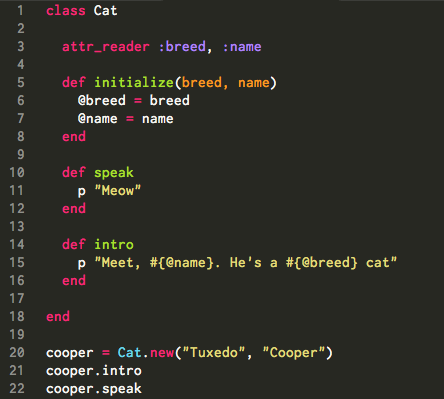
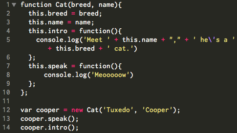

Review of Ruby Classes
Recall that classes in Ruby serve as the blueprint for creating objects on a batch basis that share the same behavior and variables.
My sister, Erika, has high hopes to one day be a crazy cat lady. Her cat-tally is currently 3, but to achieve true cat-lady status she's going to need many more cats. To help her out, I've decided to create a Ruby Cat class. Now she'll be able to make as many instances of virtual Cats as her heart desires.
An intro to JavaScript Constructor Functions
A constructor in JavaScript is a regular funciton. When used with the 'new' method, it makes a new object and initializes the new object with a properties and methods. The equivalent of a Ruby instance variable is a JS property value.
When 'new Cat' (the constructor) is called four things happen:

Functions automatically get a property called 'prototype,' which is an empty object. Just like class instances inherit the instance variables and methods of its class, a constructed object inherits all of the properties of its constructor's prototype.